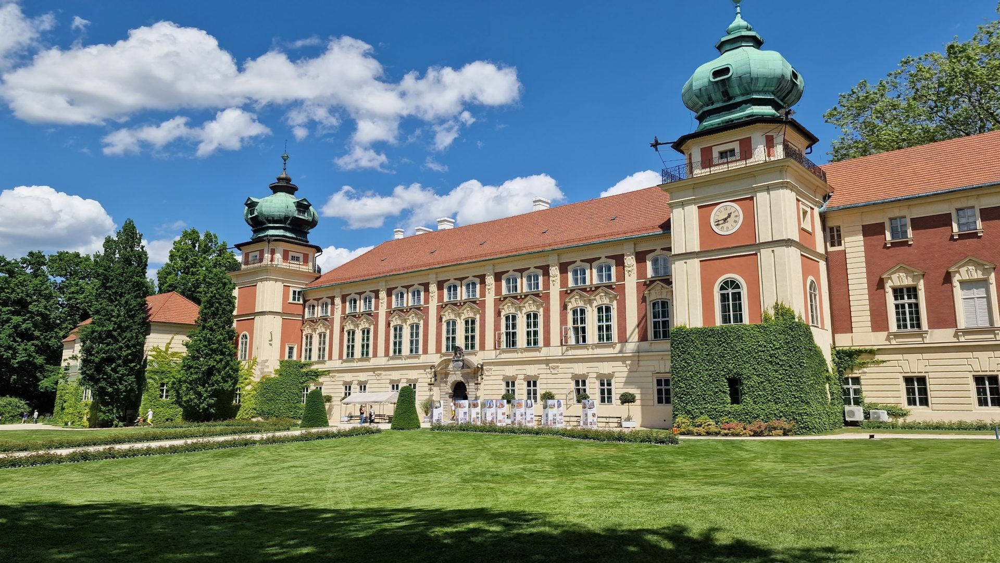
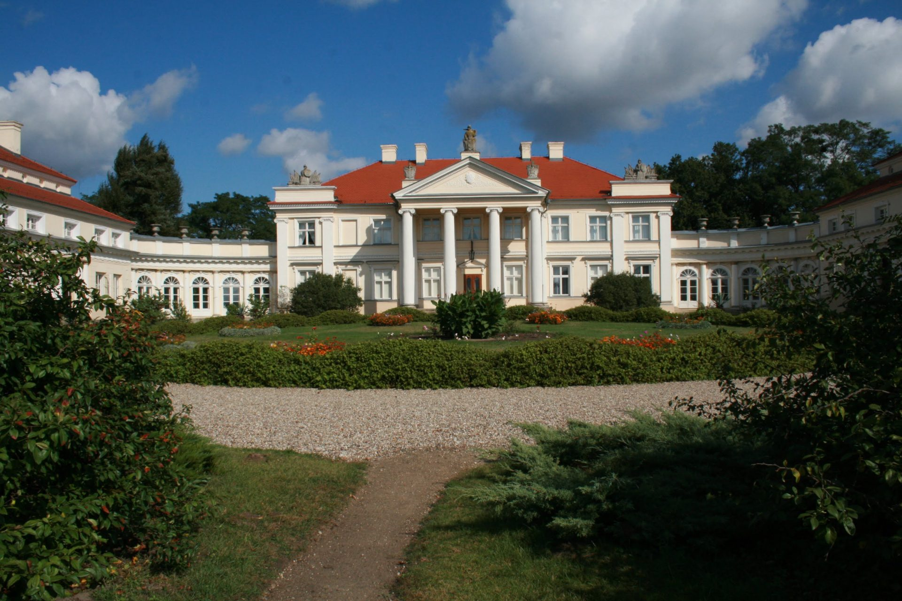
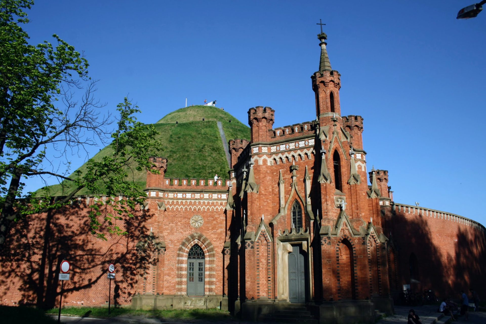
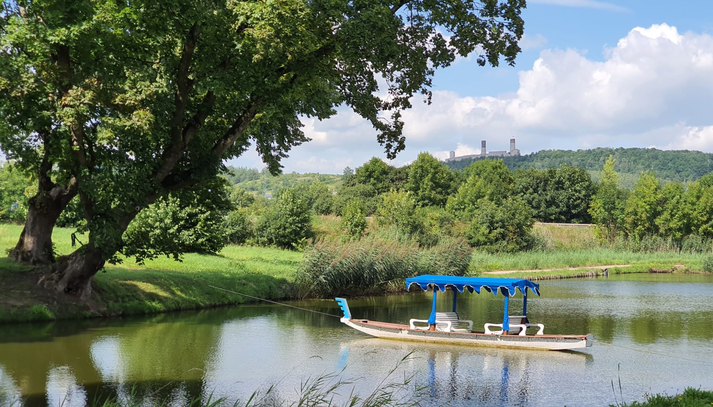
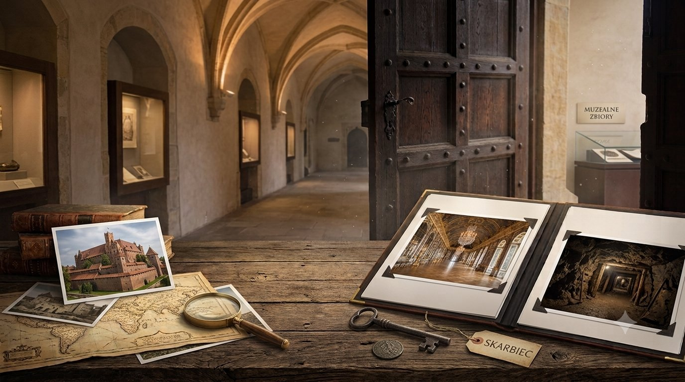

Ministerstwo
Podróży
Podróży
Zamki, pałace i miejsca, które warto odwiedzić choć raz w życiu.
Rozpocznij zwiedzanieTa strona to kolekcja miejsc, które warto zobaczyć — warowne zamki, eleganckie pałace, okazałe dwory czy mroczne podziemia. Niektóre z nich można zwiedzić, w innych zamieszkać, dobrze zjeść czy też dotknąć nieznanej historii ukrytej w kamieniu.


Rezydencje magnackie i szlacheckie, złocone salony i rodowe portrety.
Wejdź do komnaty →
Bastiony, kazamaty i systemy fortyfikacji ukryte pod ziemią.
Wejdź do komnaty →
Niesamowite zakątki, muzea i wydarzenia — to, czego nie można przegapić.
Wejdź do komnaty →
Artykuły, zapowiedzi wydarzeń i wiadomości ze świata polskich rezydencji.
Wejdź do komnaty →Wszystkie najnowsze zdjęcia ze wszystkich komnat, zebrane w jednym miejscu.
Zobacz galerię →Wszystkie dodane miejsca zaznaczone na jednej, interaktywnej mapie Polski.
Zobacz mapę →Wszystkie dodane miejsca, zaznaczone tam, gdzie naprawdę leżą — dotknij pinezki, aby zobaczyć szczegóły.